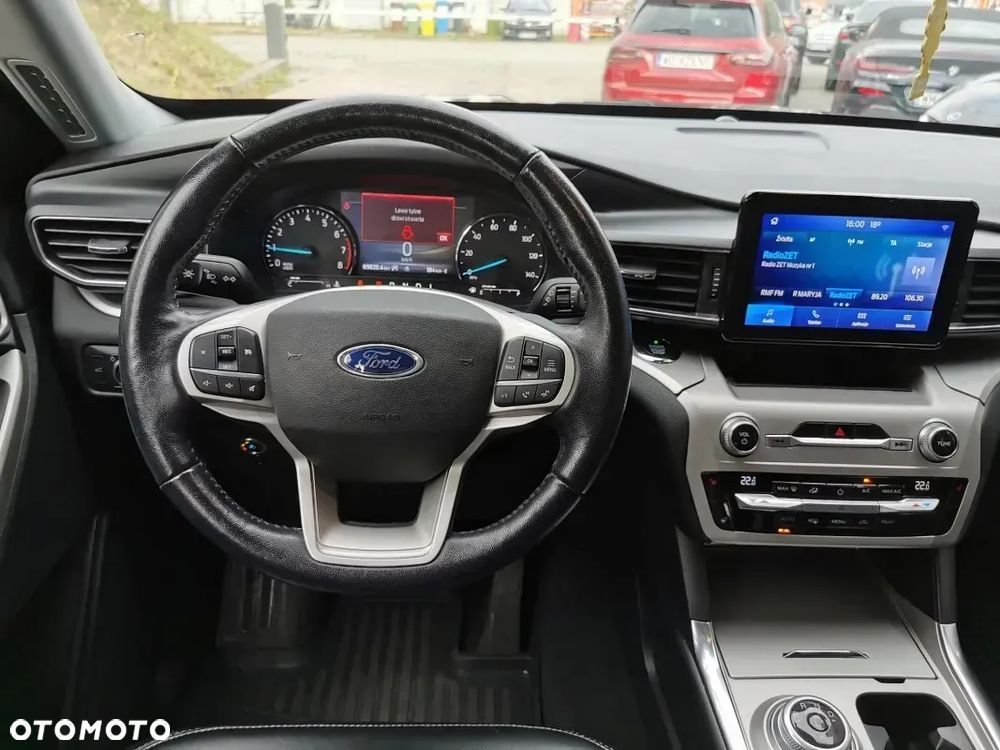
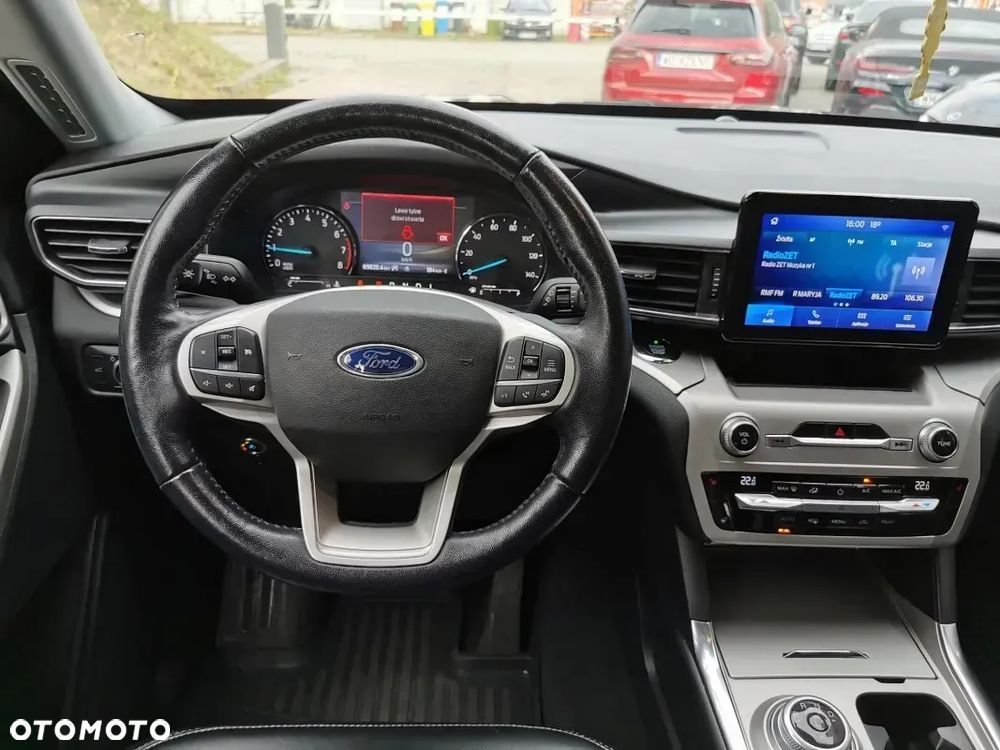
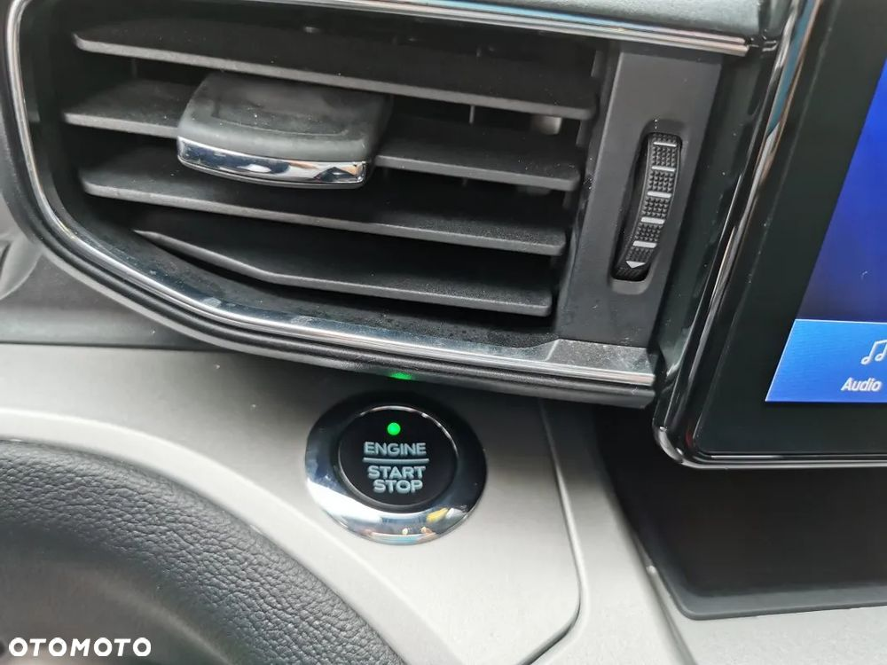
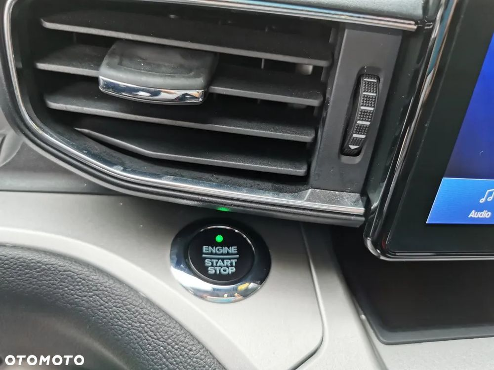
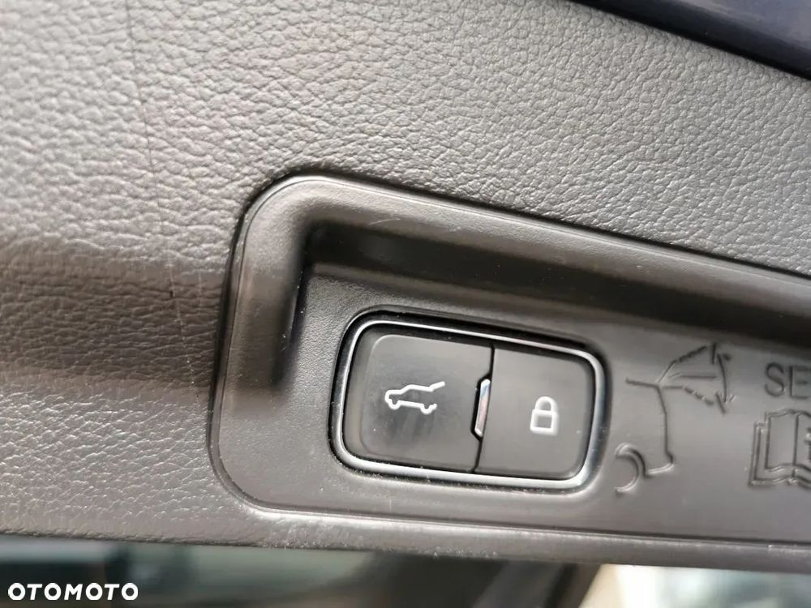
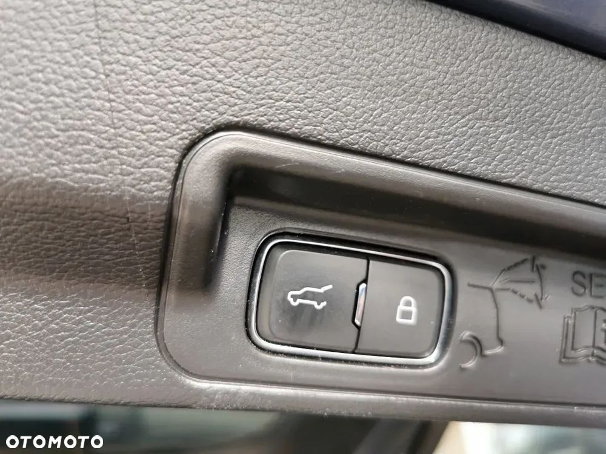

FORD EXPLORER – Oferuję przestronnego SUV-a z 2021 roku w atrakcyjnym kolorze niebieskim. Samochód zapewnia komfortową jazdę dla całej rodziny, a jego nowoczesna sylwetka i solidna konstrukcja gwarantują bezpieczeństwo i wygodę na każdej trasie. Auto pochodzi od Prestige Cars Piotr Raspopin.
Przed przyjazdem proszę o kontakt telefoniczny. Możliwość obejrzenia auta po wcześniejszym umówieniu się.
Wszystkie informacje zawarte w tym ogłoszeniu należy potwierdzić u sprzedawcy
Ford Explorer VI SUV 2.3 EcoBoost 280KM 206kW + automatyczna Selectshift 6 stopniowa AWD AWD
☑ Data produkcji z tabliczki znamionowej marzec 2021
☑ Pierwszy właściciel w Polsce
☑ VIN 1FMSK8DH3MGB58424
☑ Data ważności polisy: 26.08.2026
☑ Do auta posiadamy komplet 2 fabrycznych kluczyków
☑ Pierwsza rejestracja za granicą 01,01,2021
☑ Miejsce pochodzenia: USA - ciepły klimat = brak korozji.
☑ Posiadamy pełną dokumentacją pochodzeniową włącznie ze zdjęciami z aukcji w USA.
☑ Pierwsza rejestracja w Polsce 27,08,2024
WYPOSAŻENIIE XLT
- 6 osobowy
- napęd AWD 4x4
- automatyczna skrzynia biegów
- auto ma założoną instalację gazową w 2024 roku Alex Optima
- podgrzewana kierownica
- podgrzewane fotele przednie
- wyposażone w zdalne odpalanie
- składane siedzenia z tyłu (wersja 6 osobowa)
- pakiet stylistyczny
- czarna skórzana tapicerka
- klimatyzacja automatyczna 3 strefowa z osobną regulacją temperatury i siły nawiewu na tył
- elektrycznie sterowany fotel kierowcy
- menu w języku polskim
- dotykowy ekran
- asystent utrzymania pasa ruchu
- system informujący o możliwości kolizji przedniej z funkcją hamowania
- asystent zmiany pasa ruchu BLI
- radio
- bluetooth
- drive mode zmienne parametry jazdy
- kamera cofania
- czujniki parkowania
- android auto
- WiFi
- bezkluczykowy dostęp i uruchamianie silnika
- licznik LCD
- elektrycznie sterowana klapa bagażnika
- wielofunkcyjna kierownica
- tempomat
- relingi dachowe
- przyciemniane tylne szyby
- światła do jazdy dziennej
- halogeny
- automatyczne światła
- elektrycznie sterowane szyby i lusterka
- mocowania fotelików dziecięcych Isofix
- 9 poduszek powietrznych
- ABS, ESP
- immobilizer
- autoalarm
Przed przyjazdem proszę o kontakt:
Pomorski Krzysztof
☎ ☎
Na miejscu możliwość odbycia jazdy próbnej, wgląd w dokumentację samochodu,
pomiar czujnikiem lakieru, rozmowa z osobą pomocną w finansowaniu zakupu.
Prosimy o wcześniejszy kontakt przed przyjazdem w celu potwierdzenia dostępności auta.
Oferujemy usługę dostarczenia auta do klienta.
Możliwość zostawienia auta w rozliczeniu.
Kupujący zwolniony z podatku PCC (2% wartości).
Przed przyjazdem proszę o kontakt:
Pomorski Krzysztof
☎ ☎.
 


 
 
